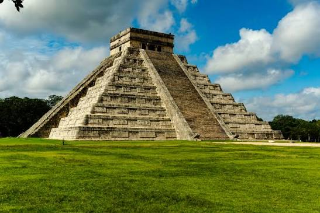

Chichén Itzá

Descripción
Chichén Itzá fue una de las ciudades más importantes de la civilización maya. Su construcción representa el gran conocimiento de esta cultura en áreas como la arquitectura, astronomía y matemáticas.
Su edificio más famoso es la pirámide de Kukulkán, también conocida como El Castillo, una construcción que refleja la relación entre los mayas y los movimientos del Sol.
Ubicación
Se encuentra en la península de Yucatán, México, en el estado de Yucatán. Fue un importante centro político, económico y religioso de la civilización maya.
Curiosidades
- Durante los equinoccios se observa un efecto de sombra que parece representar el descenso de la serpiente Kukulkán.
- Fue declarada Patrimonio de la Humanidad por la UNESCO en 1988.
- En 2007 fue elegida como una de las Nuevas 7 Maravillas del Mundo Moderno.
Datos importantes
Construida aproximadamente entre los años 600 y 1200 d.C., Chichén Itzá muestra el avanzado conocimiento astronómico de los mayas.